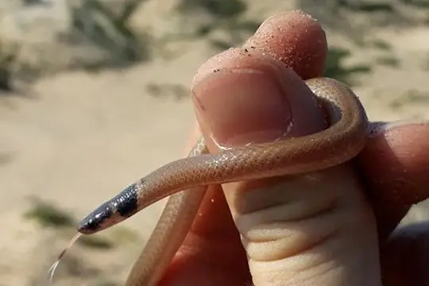

Aparallactus
The genus Aparallactus (family Atractaspididae) has 11 living species in SnakeList (all venomous), recorded in 31 countries.
- 11living species
- 11venomous
- 31countries
About the genus
A genus of the family Atractaspididae (burrowing asps, stiletto snakes and relatives).
Species
Showing 11 species
 Black Centipede EaterAparallactus guentheri
Black Centipede EaterAparallactus guentheri- No photo yetBlack Centipede-eaterAparallactus niger
 Cape Centipede EaterAparallactus capensis
Cape Centipede EaterAparallactus capensis Jackson's Centipede-eaterAparallactus jacksonii
Jackson's Centipede-eaterAparallactus jacksonii- No photo yetLined Centipede-eaterAparallactus lineatus
- No photo yetMalindi Centipede-eaterAparallactus turneri

Mozambique Centipede EaterAparallactus nigriceps Plumbeous Centipede EaterAparallactus lunulatus
Plumbeous Centipede EaterAparallactus lunulatus- No photo yetUsambara Centipede-eaterAparallactus werneri
 Western Forest Centipede-eaterAparallactus modestus
Western Forest Centipede-eaterAparallactus modestus- No photo yetZaire Centipede-eaterAparallactus moeruensis
No snakes in Aparallactus match.
About the genus Aparallactus
- Distribution: living species recorded in 31 countries, on one continent: Africa.
- Family: Atractaspididae.
- Countries and territories: Benin, Botswana, Cameroon, Central African Republic, Chad, Democratic Republic of the Congo, Equatorial Guinea, Eritrea, Eswatini, Ethiopia, Gabon, Ghana, Guinea, Ivory Coast, Kenya, Lesotho, Liberia, Malawi, Mozambique, Nigeria, Republic of the Congo, Sierra Leone, Somalia, South Africa, South Sudan, Sudan, Tanzania, Togo, Uganda, Zambia, Zimbabwe.
Compare its species
Its living species side by side. Lengths come only from SnakeList’s reviewed, sourced accounts; the others are left blank rather than guessed.
| Species | Venom | Recorded in | Adult length (reviewed accounts) |
|---|---|---|---|
| Black Centipede Eater Aparallactus guentheri | Venomous | 6 countries (Africa) | No reviewed account yet |
| Black Centipede-eater Aparallactus niger | Venomous | 4 countries (Africa) | No reviewed account yet |
| Cape Centipede Eater Aparallactus capensis | Venomous | 10 countries (Africa) | No reviewed account yet |
| Jackson's Centipede-eater Aparallactus jacksonii | Venomous | 6 countries (Africa) | No reviewed account yet |
| Lined Centipede-eater Aparallactus lineatus | Venomous | 6 countries (Africa) | No reviewed account yet |
| Malindi Centipede-eater Aparallactus turneri | Venomous | 1 country (Africa) | No reviewed account yet |
| Mozambique Centipede Eater Aparallactus nigriceps | Venomous | 1 country (Africa) | No reviewed account yet |
| Plumbeous Centipede Eater Aparallactus lunulatus | Venomous | 23 countries (Africa) | No reviewed account yet |
| Usambara Centipede-eater Aparallactus werneri | Venomous | 1 country (Africa) | No reviewed account yet |
| Western Forest Centipede-eater Aparallactus modestus | Venomous | 16 countries (Africa) | No reviewed account yet |
| Zaire Centipede-eater Aparallactus moeruensis | Venomous | 2 countries (Africa) | No reviewed account yet |